[SOSP’23] vLLM: Efficient Memory Management for Large Language Model Serving with PagedAttention
根据最新估算，处理一次 LLM 请求的成本可能比传统关键词查询高出 10 倍。
LLM 的核心是一种自回归 Transformer 模型（Vaswani 等人，2017 年）。该模型会根据输入内容以及此前已生成的输出序列，逐个生成 Token。对于每一项请求，都需要重复这一耗时的过程，直到模型生成终止 Token 为止。这种顺序生成方式使得计算工作受到内存限制，无法充分利用 GPU 的计算能力，进而降低了处理效率。
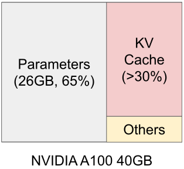
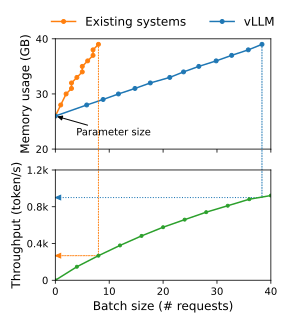
图 1：模型参数常驻 GPU 内存；KVCache 随请求动态分配和释放。vLLM 通过更高效的 KVCache 管理提高吞吐量。
我们观察到现有的 LLM 服务系统 (Yu et al., 2022; NVIDIA, 2023a) 未能高效管理 KVCache 内存。这主要是因为它们将请求的 KVCache 存储在连续的内存空间中，而大多数深度学习框架 (Paszke et al., 2019; Olston et al., 2017) 要求张量存储在连续内存中。然而，与传统深度学习工作负载中的张量不同，KVCache 具有独特的特性：随着模型生成新 Token，它会随时间动态增长和收缩，并且其生命周期和长度事先未知。这些特性使得现有系统的方法在两个方面显著低效：
内部和外部内存碎片：为了将请求的 KVCache 存储在连续空间中，它们会按照请求的最大长度（例如 2048 个 Token）预先分配一块连续内存。这可能导致严重的内部碎片，因为请求的实际长度可能远短于其最大长度。在现有系统中，只有 20.4% 到 38.2% 的 KVCache 空间被用于存储实际的 Token 状态。
现有系统无法利用内存共享的机会。LLM 服务通常会使用并行采样和 Beam Search 等先进的解码算法，从而为每个请求生成多个输出。在这种情况下，该请求包含多个序列，这些序列的 KVCache 可以部分共享。但由于这些序列的 KVCache 存储在相互独立的区域中，现有系统无法实现内存共享。
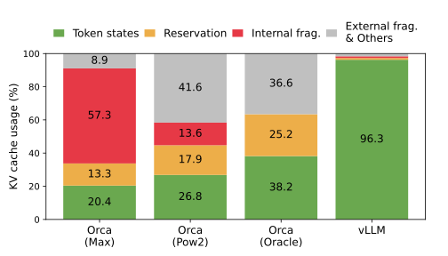
图 2：实验中不同 LLM 服务系统的平均内存浪费比例。
#LLM 服务中的内存挑战
大尺寸 KVCache 以 13B 参数的 OPT 模型为例，单个 Token 的 KVCache 需要 800 KB 的空间，计算方式为（K 和 V 向量）（隐藏状态大小）（层数）（FP16 每个元素占用的字节数）。由于 OPT 最多可生成 2048 个 Token，存储一个请求的 KVCache 所需内存可高达 1.6 GB。
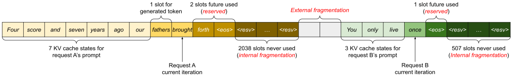
图 3：预留空间、内部碎片和外部碎片会阻止更多请求装入 GPU 内存。
复杂的解码算法 LLM 服务提供了一系列解码算法供用户选择，每种算法对内存管理复杂性的影响各不相同。例如，当用户从单个输入提示中请求多个随机样本时–这是程序补全中的一个典型用例 (GitHub, 2022)–提示部分的 KVCache（在我们的实验中占总 KVCache 内存的 12%，见 §6.3）可以被共享，以最小化内存使用。另一方面，自回归生成阶段的 KVCache 因样本结果不同以及对上下文和位置的依赖，应保持不共享。KVCache 的共享程度取决于所采用的具体解码算法。在 Beam Search (Sutskever et al., 2014) 等更复杂的算法中，不同 Beam 可以共享更大比例的 KVCache（最多可节省 55% 的内存，见 §6.3），并且共享模式会随解码过程推进而演变。
针对未知输入与输出长度的调度问题 发送给 LLM 服务的请求，其输入和输出长度往往存在差异。这就要求内存管理系统能够应对各种不同的提示长度。此外，随着解码过程的进行，请求的输出长度会逐渐增加，相应地，用于存储 KVCache 的内存也会随之扩大，这可能会耗尽用于处理新请求或继续处理现有提示所需的内存。因此，系统需要做出相应的调度决策，例如从 GPU 内存中驱逐某些请求的 KVCache，或用其他数据替换这些缓存。
#方法
在这项工作中，我们设计了一种新的注意力算法–PagedAttention，并构建了 LLM 服务引擎 vLLM，以此应对第 3 节中提到的各种挑战。该引擎采用集中式调度器来协调各个分布式 GPU Worker 的执行任务。得益于 PagedAttention 的支持，KVCache 管理器能够以分页方式有效管理 KVCache。具体而言，KVCache 管理器通过集中式调度器发送的指令，控制 GPU Worker 上的物理 KVCache 内存。

图 4：vLLM 系统概览。
#PagedAttention
PagedAttention 是一种受操作系统中经典分页理念启发的注意力算法（Kilburn 等，1962 年）。与传统的注意力算法不同，PagedAttention 允许在非连续的内存空间中存储连续的 K 和 V。具体来说，PagedAttention 将每个序列的 KVCache 划分为 KV 块。每个块包含固定数量的 Token 的 K 和 V 向量，记 KV 块大小为。K 块为，V 块为。式 4 中的注意力计算可以转换为以下按块计算：
其中 是注意力得分行向量 的第 个块。
在注意力计算过程中，分页注意力内核分别识别并获取不同的 KV 块。图 5 展示了 PagedAttention 的示例：K 和 V 向量分布在三个物理内存不连续的块中。在每次计算时，内核将查询 Token 的查询向量（“第四个”）与块 中的键向量相乘（例如块 0 中“第四个”和“第七个” Token 对应的键向量），计算注意力得分；随后将 与块 中的值向量相乘，得到最终注意力输出。
总之，分页注意力算法允许 KV 块存储在非连续的物理内存中，这使得 vLLM 中的分页内存管理更加灵活。
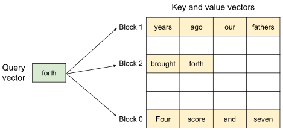
图 5：注意力的 K 和 V 向量以非连续 KV 块的形式存储在内存中。
#KVCache Manager
vLLM 内存管理器的核心思想类似于操作系统中的虚拟内存。操作系统将内存划分为固定大小的页面，并将用户程序的逻辑页面映射到物理页面。连续的逻辑页可以对应非连续的物理内存页，使用户程序能够像访问连续内存一样访问内存。此外，物理内存空间无需事先完全预留，使操作系统能够根据需要动态分配物理页面。 vLLM 利用虚拟内存背后的理念来管理 LLM 服务中的 KVCache。借助 PagedAttention，我们将 KVCache 组织为固定大小的 KV 块，类似于虚拟内存中的页面。
请求的 KVCache 以一系列逻辑 KV 块表示；随着新 Token 及其 KVCache 的生成，逻辑 KV 块从左到右填充。最后一个 KV 块中的空余位置将保留给后续生成。在 GPU Worker 上，Block Engine 分配一段连续的 GPU DRAM，并将其划分为物理 KV 块（CPU RAM 中也需要相应空间用于换出；见 §4.5）。 KV Block Manager 还维护 Block Table，即每个请求的逻辑 KV 块与物理 KV 块之间的映射。每个 Block Table 条目记录对应的物理块及其已填充位置数。将逻辑和物理 KV 块分离，使 vLLM 能够动态扩展 KVCache 内存，而无需提前为所有位置预留，从而消除了现有系统中大部分内存浪费，如图 2 所示。
#使用 PagedAttention 与 vLLM 进行解码
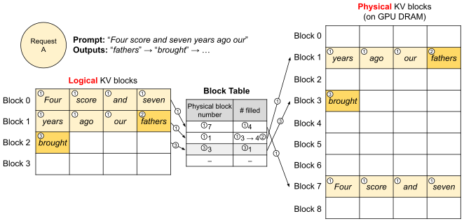
图 6：vLLM 中 Block Table 从逻辑 KV 块到物理 KV 块的映射。
在全局范围内，对于每次解码迭代，vLLM 首先选择一组候选序列进行批处理（更多内容见 §4.5），并为新需要的逻辑块分配物理块。然后，vLLM 将当前迭代的所有输入 Token（即提示阶段请求的所有 Token 以及生成阶段请求的最新 Token）连接成一个序列，并将其输入 LLM。在 LLM 的计算过程中，vLLM 使用 PagedAttention Kernel 访问以逻辑 KV 块形式存储的已有 KVCache，并将新生成的 KVCache 保存到物理 KV 块中。在 KV 块内存储多个 Token（块大小大于 1），使 PagedAttention Kernel 能够并行处理 KVCache 中的更多位置，从而提高硬件利用率并减少延迟。然而，较大的块大小也会增加内存碎片化。我们在 §7.2 研究了块大小的影响。
随着更多 Token 及其 KVCache 的生成，vLLM 会继续为逻辑块动态分配新的物理块。由于所有块都是从左到右填充的，并且只有当所有前一个块都满时才会分配新的物理块，vLLM 将请求的所有内存浪费限制在一个块内，从而可以有效地利用所有内存，如图 2 所示。这允许更多请求被批量处理到内存中–从而提高吞吐量。一旦请求完成生成，其 KV 块可以被释放以存储其他请求的 KVCache。在图 7 中，我们展示了 vLLM 管理两个序列内存的一个示例。两个序列的逻辑块被映射到 GPU Worker 中 Block Engine 预留空间内的不同物理块。两个序列的相邻逻辑块在物理 GPU 内存中不需要连续，并且物理块的空间可以被两个序列有效利用。
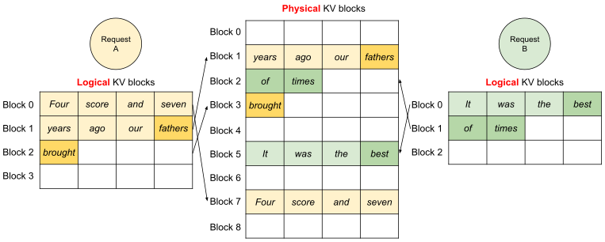
图 7：两个请求的逻辑 KV 块映射到 GPU Worker 中不同的物理 KV 块。
#应用于其他解码场景
第 4.3 节展示了 PagedAttention 和 vLLM 如何处理基本解码算法，例如贪婪解码和采样；这些算法以一个用户提示为输入，并生成一个输出序列。在许多成功的 LLM 应用中 (GitHub, 2022; OpenAI, 2020)，LLM 服务必须提供更复杂的解码场景，这些场景具有复杂的访问模式和更多内存共享机会。本节展示了 vLLM 在这些场景中的通用适用性。
并行采样。在基于 LLM 的程序助手（Chen 等人，2021；GitHub, 2022）中，一个 LLM 为单个输入提示生成多个采样输出；用户可以从多个候选中选择一个最喜欢的输出。迄今为止，我们隐含地假设一个请求生成一个序列。在本文的其余部分，我们假设更一般的情况，即一个请求生成多个序列。在并行采样中，一个请求包含多个共享相同输入提示的样本，从而允许提示的 KVCache 被共享。通过 PagedAttention 和分页内存管理，vLLM 可以轻松实现这种共享并节省内存。
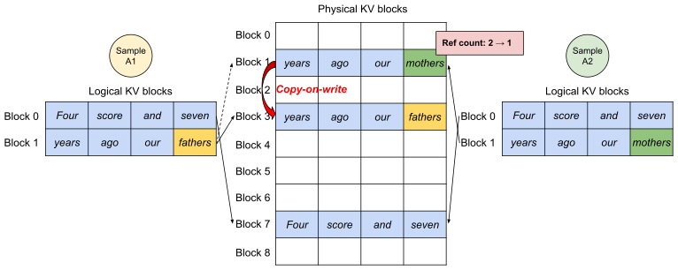
图 8：并行采样中，多个输出序列共享输入提示的 KVCache，并在写入共享的最后一个块时使用写时复制。
图 8 展示了针对两个输出的并行解码示例。由于两个输出共享相同的提示，在提示阶段只需保留一份提示状态；两个序列的提示逻辑块映射到相同的物理块：两个序列的逻辑块 0 和 1 分别映射到物理块 7 和 1。由于单个物理块可以映射到多个逻辑块，我们为每个物理块引入了引用计数。在此情况下，物理块 7 和 1 的引用计数均为 2。在生成阶段，两个输出会采样不同的输出 Token，因此需要为 KVCache 分配独立的存储空间。vLLM 针对可能被多个序列修改的物理块，在块粒度上实现了写时复制机制，类似于操作系统虚拟内存中的写时复制技术（例如，在进程创建时）。具体来说，在图 8 中，当样本 A1 需要写入其最后一个逻辑块（逻辑块 1）时，vLLM 识别到相应物理块（物理块 1）的引用计数大于 1；它分配一个新的物理块（物理块 3），指示 Block Engine 从物理块 1 复制信息，并将引用计数减至 1。接下来，当样本 A2 写入物理块 1 时，引用计数已经减至 1；因此 A2 直接将其新生成的 KVCache 写入物理块 1。
综上所述，vLLM 能够使多个输出样本共享用于存储提示 KVCache 的大部分空间，但最后的逻辑块除外，该块由写时复制机制管理。通过在多个样本间共享物理块，可以大幅减少内存使用，尤其对于长输入提示而言。
Beam Search。在机器翻译（Wu 等人，2016）等 LLM 任务中，用户期望 LLM 输出最合适的 个翻译。Beam Search (Sutskever et al., 2014) 被广泛用于从 LLM 解码最可能的输出序列，因为它避免了完全遍历样本空间的计算开销。该算法依赖于 Beam Width 参数，该参数决定每一步保留的最高分候选数量。在解码过程中，Beam Search 通过考虑所有可能的 Token 来扩展每个 Beam 中的候选序列，使用 LLM 计算它们各自的概率，并从 个候选中保留最可能的 个序列，其中 为词汇表大小。
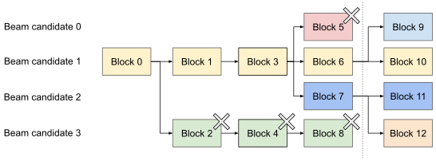
图 9：Beam Search 中候选序列之间的 KV 块共享。
与并行解码不同，Beam Search 不仅在不同候选之间共享初始提示块，还会共享其他块；其共享模式会随解码过程推进而动态变化，类似于操作系统通过 fork 创建的进程树。图 9 展示了 vLLM 如何管理 Beam Width 为 的示例中的 KV 块。在虚线所示的迭代之前，每个候选序列已经使用了 4 个完整的逻辑块。所有 Beam 候选共享第一个块 0（即提示）。候选 3 从第二个块开始偏离其他候选。候选 0 至 2 共享前 3 个块，并在第 4 个块处分叉。在后续迭代中，概率最高的前 4 个候选都源自候选 1 和 2。由于原始候选 0 和 3 不再位于前 4 个候选中，它们的逻辑块被释放，相应物理块的引用计数减少。vLLM 会释放所有引用计数达到 0 的物理块（块 2、4、5、8），然后为新的候选分配新的物理块（块 9 至 12）以存储新的 KVCache。此时，所有候选共享块 0、1、3；候选 0 和 1 共享块 6，候选 2 和 3 进一步共享块 7。
以往的 LLM 服务系统需要在 Beam 候选之间频繁复制 KVCache。例如，在图 9 所示的情况下，在虚线之后，候选 3 需要复制候选 2 的大量 KVCache 才能继续生成。vLLM 的物理块共享显著减少了这种频繁的内存复制开销。在 vLLM 中，不同 Beam 候选的大部分块可以共享。只有新生成的 Token 位于旧共享块内时（如在并行解码中），才会应用写时复制（copy-on-write）机制；此时仅需复制一个数据块。
共享前缀。通常，LLM 用户会提供一个（长）任务描述，包括指令和示例输入输出，也称为系统提示（system prompt） (OpenAI, 2023a)。该描述与实际任务输入连接起来形成请求的提示。LLM 基于完整的提示生成输出。图 10 展示了一个示例。此外，通过提示工程（prompt engineering）可以进一步调整共享前缀，以提高下游任务的准确性 (Li and Liang, 2021; Lester et al., 2021)。
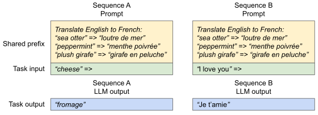
图 10：共享提示示例；图中示例改编自 Brown 等人（2020）。
对于这类应用，许多用户提示共享前缀，因此 LLM 服务提供者可以预先存储前缀的 KVCache，以减少在前缀上进行的冗余计算。在 vLLM 中，只需为预定义的共享前缀预留一组物理块即可实现，类似于操作系统处理跨进程共享库。带有共享前缀的用户输入提示只需将其逻辑块映射到已缓存的物理块（最后一个块标记为写时复制）。提示阶段的计算仅需在用户的任务输入上执行。
混合解码方法。前面讨论的解码方法表现出不同的内存共享和访问模式。然而，vLLM 能够同时处理具有不同解码偏好的请求，而现有系统无法高效地做到这一点。这是因为 vLLM 通过一个将逻辑块映射到物理块的公共映射层隐藏了不同序列之间的复杂内存共享。LLM 及其执行内核仅看到每个序列的物理块 ID 列表，无需处理跨序列的共享模式。与现有系统相比，这种方法扩展了具有不同采样需求的请求的批处理机会，最终提高了系统的整体吞吐量。
#调度和抢占
当请求流量超过系统容量时，vLLM 必须优先处理一部分请求。在 vLLM 中，我们采用先到先服务（FCFS）调度策略处理所有请求，以确保公平性并防止饥饿。当 vLLM 需要抢占请求时，它确保先到达的请求优先处理，而后到达的请求优先抢占。
LLM 服务面临一个独特的挑战：LLM 的输入提示长度可能差异很大，而输出长度则取决于输入提示和模型，且事先未知。随着请求数量和输出量的增长，vLLM 可能会耗尽 GPU 的物理块来存储新生成的 KVCache。在此背景下，vLLM 需要回答两个经典问题：
- 应该驱逐哪些块？
- 如果需要再次使用被驱逐的块，如何恢复？
通常，驱逐策略使用启发式方法预测未来最不可能被访问的块，并将其驱逐。由于在这里同一序列的所有块总是会一起被访问，我们实现了一种全有或全无的驱逐策略：要么驱逐一个序列的所有块，要么一个都不驱逐。此外，一个请求内的多个序列（例如，一次 Beam Search 请求中的 Beam 候选）会作为序列组进行群组调度。由于这些序列之间可能存在内存共享，同一序列组内的序列总是会被一起抢占或重新调度。为回答第二个问题–如何恢复被驱逐的块–我们考虑了两种技术：
换页。这是大多数虚拟内存实现采用的经典技术：将被驱逐的页面复制到磁盘上的交换空间。在这里，我们将被驱逐的 KV 块复制到 CPU 内存。如图 4 所示，除 GPU 块分配器外，vLLM 还包括一个 CPU 块分配器，用于管理换出到 CPU RAM 的物理块。当 vLLM 耗尽可供新 Token 使用的空闲物理块时，它会选择一组序列进行驱逐，并将它们的 KVCache 迁移到 CPU。抢占一个序列并驱逐其块后，vLLM 将停止接受新请求，直到所有被抢占的序列完成。请求完成时，其块会从内存中释放；被抢占序列的块会重新加载，以继续处理该序列。请注意，根据此设计，换出到 CPU RAM 的块数量不会超过 GPU RAM 中总物理块的数量，因此 CPU RAM 中的交换空间受限于为 KVCache 分配的 GPU 内存。
重计算。在这种情况下，当被抢占的序列被重新调度时，只需重新计算 KVCache。请注意，重计算延迟可能显著低于原始延迟，因为解码时生成的 Token 可以与原始用户提示拼接成一个新的提示；它们在所有位置上的 KVCache 可在一次提示阶段迭代中生成。
交换和重计算的性能取决于 CPU RAM 与 GPU 内存之间的带宽以及 GPU 的计算能力。我们在 §7.3 中检验了交换和重计算的速度。
#分布式执行
许多 LLM 的参数规模超过了单个 GPU 的容量（Brown 等人，2020；Chowdhery 等人，2022）。因此，有必要将它们划分到多个分布式 GPU 上，并以 MP 的方式执行（Zheng 等人，2022；Li 等人，2023）。这需要一种能够处理分布式内存的内存管理器。vLLM 在分布式环境下有效，因为它支持 Transformer 中广泛使用的 Megatron-LM 风格的 TP 策略（Shoeybi 等人，2019）。该策略遵循 SPMD（单程序多数据）执行模型，其中线性层被划分以执行分块矩阵乘法，GPU 通过 All-Reduce 操作持续同步中间结果。具体而言，注意力算子沿注意力头维度划分，每个 SPMD 进程负责多头注意力中的一部分注意力头。
我们观察到，即使采用 MP 执行，每个模型分片仍会处理相同的输入 Token 集合，因此需要为相同位置使用 KVCache。因此，vLLM 在集中式调度器内部集成了一个 KVCache 管理器，如图 4 所示。不同的 GPU Worker 共享该管理器，以及从逻辑块到物理块的映射。这种公共映射允许 GPU Worker 使用调度器为每个输入请求提供的物理块来执行模型。尽管每个 GPU Worker 具有相同的物理块 ID，但每个 Worker 仅存储其对应注意力头的一部分 KVCache。
在每一步中，调度器首先为批次中的每个请求准备输入 Token ID 和对应的 Block Table。接下来，调度器将此控制消息广播给 GPU Worker。然后，GPU Worker 使用输入 Token ID 执行模型。在注意力层中，GPU Worker 根据控制消息中的 Block Table 读取 KVCache。在执行过程中，GPU Worker 无需调度器协调，即可使用 All-Reduce 通信原语同步中间结果，如 Shoeybi 等人（2019）所述。最后，GPU Worker 将本次迭代采样得到的 Token 发送回调度器。总之，GPU Worker 无需在内存管理上同步，因为他们只需在每次解码迭代开始时接收全部内存管理信息和步骤输入。
#实现
vLLM 是一个端到端的服务系统，具有 FastAPI (FastAPI, 2023) 前端和基于 GPU 的推理引擎。前端扩展了 OpenAI API (OpenAI, 2020) 接口，允许用户为每个请求自定义采样参数，例如最大序列长度和 Beam Width。vLLM 引擎使用 8.5K 行 Python 代码和 2K 行 C++/CUDA 代码编写。我们在开发中使用 Python 实现控制相关组件，包括调度器和 KV Block Manager，同时为 PagedAttention 等关键操作开发自定义 CUDA 内核。对于模型执行器，我们使用 PyTorch（Paszke 等人，2019）和 Transformers（Wolf 等人，2020）实现流行的 LLM，如 GPT（Brown 等人，2020）、OPT（Zhang 等人，2022）和 LLaMA（Touvron 等人，2023）。我们使用 NCCL (NVIDIA, 2023b) 在分布式 GPU Worker 之间进行张量通信。
#内核级优化
由于 PagedAttention 引入的内存访问模式无法被现有系统高效支持，我们开发了多个 GPU 内核进行优化：
- Fused reshape and block write。在每个 Transformer 层中，新的 KVCache 被划分为块，并重塑为适合按块读取的内存布局，再保存到 Block Table 指定的位置。为最小化内核启动开销，我们将这些操作融合为一个内核。
- Fusing block read and attention。我们适配了 FasterTransformer (NVIDIA, 2023a) 中的注意力内核，使其根据 Block Table 读取 KVCache，并即时执行注意力操作。为确保合并内存访问，我们为每个块分配一个 GPU Warp 进行读取。此外，还增加了对请求批次内可变序列长度的支持。
- Fusing block copy。写时复制机制发出的块复制操作可能作用于不连续的块。若使用 cudaMemcpyAsync API，会产生大量小粒度数据移动调用。为降低开销，我们实现了一个内核，将不同块的复制操作批量合并为一次内核启动。
#支持多种解码算法
vLLM 通过三种关键方法–fork、append 和 free–实现多种解码算法。fork 方法从现有序列创建新序列；append 方法将新 Token 附加到序列；free 方法删除序列。例如，在并行采样中，vLLM 使用 fork 方法从单个输入序列创建多个输出序列，然后使用 append 在每次迭代中向这些序列添加新 Token，并使用 free 删除满足停止条件的序列。vLLM 在 Beam Search 和前缀共享中也采用相同的策略。未来的解码算法也可以通过组合这些方法得到支持。
#评估
#实验设定
模型：
- OPT (Zhang et al., 2022) models with 13B, 66B, and 175B parameters
- LLaMA (Touvron et al., 2023) with 13B parameters
机器：
- A2 instances with NVIDIA A100 GPUs on Google Cloud Platform
负载：
- synthesize workloads based on ShareGPT (Team, 2023) and Alpaca (Taori et al., 2023) datasets
- generate request arrival times using Poisson distribution with different request rates
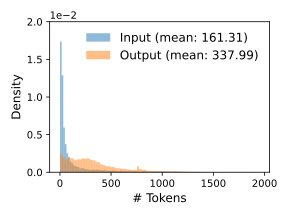
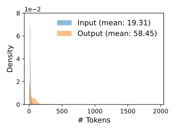
图 11：ShareGPT 与 Alpaca 数据集的输入和输出长度分布。
基线：
- FasterTransformer (NVIDIA, 2023a) 是一个针对延迟高度优化的分布式推理引擎。由于 FasterTransformer 没有自己的调度器，我们实现了一个具有动态批处理机制的定制调度器，该机制类似于现有的服务系统，如 Triton (NVIDIA, n.d.)。具体而言，我们根据 GPU 内存容量，为每个实验设置尽可能大的最大批处理大小 B。调度器最多接收 B 个最早到达的请求，并将批处理发送给 FasterTransformer 进行处理。
- Orca（Yu 等人，2022）是一个为吞吐量优化的最先进的 LLM 服务系统。由于 Orca 未公开可用，我们实现了自己的 Orca 版本。我们假设 Orca 使用伙伴分配算法来确定存储 KV 缓存的内存地址。基于 Orca 为请求输出预留空间多少的不同，我们实现了三个版本的 Orca：
- Orca (Oracle)。我们假设系统知道请求实际生成的输出的长度。这显示了 Orca 的上限性能，但在实践中无法实现。
- Orca (Pow2)。我们假设系统最多为输出预留 2 倍的空间。例如，如果真实输出长度为 25，它为输出预留 32 个位置。
- Orca (Max)。我们假设系统始终预留模型的最大序列长度的空间，即 2048 个 Token。
指标：
- serving throughput
- normalized latency: 每个请求端到端延迟的平均值除以其输出长度
#基本采样
我们评估了 vLLM 在三种模型和两个数据集上使用基本采样（每个请求一个样本）的性能。图 12 的第一行显示了在 ShareGPT 数据集上的结果。曲线表明，随着请求率的增加，延迟最初以缓慢的速度增加，然后突然爆炸。这可以归因于当请求率超过服务系统的容量时，队列长度会无限增长，请求的延迟也随之增加。
- Orca (Oracle)：1.7x - 2.7x 请求率提升，延迟不变
- Orca (Max)：2.7x - 8x 请求率提升，延迟不变
- For OPT-13B:
- Orca (Oracle)：2.2x 请求率提升
- Orca (Max)：4.3x 请求率提升
- FasterTransformer：22x 请求率提升
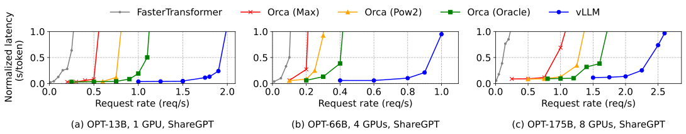
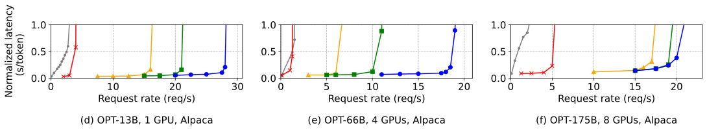
图 12：OPT 模型在 ShareGPT 和 Alpaca 数据集上的单序列生成性能。
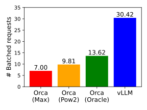
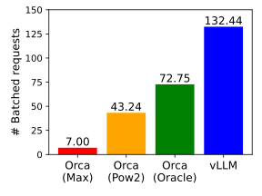
图 13：使用 OPT-13B 服务 ShareGPT (2 requests/s) 和 Alpaca (30 requests/s) trace 时的平均批处理请求数。
图 12 和图 13(b) 的第二行显示了在 Alpaca 数据集上的结果，其趋势与 ShareGPT 数据集相似。一个例外是图 12(f)，其中 vLLM 相对于 Orca（Oracle）和 Orca（Pow2）的优势不那么明显。这是因为 OPT-175B（表 1）的模型和服务器配置允许为 KV 缓存提供较大的 GPU 内存空间，而 Alpaca 数据集的序列较短。在此设置中，尽管 Orca（Oracle）和 Orca（Pow2）的内存管理效率低下，但它们也可以批量处理大量请求。因此，系统的性能变得受计算限制而非内存限制。
#并行采样和束搜索
- 并行采样：1.3x
- Beam Search (6): 2.3x
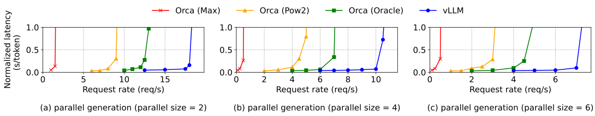
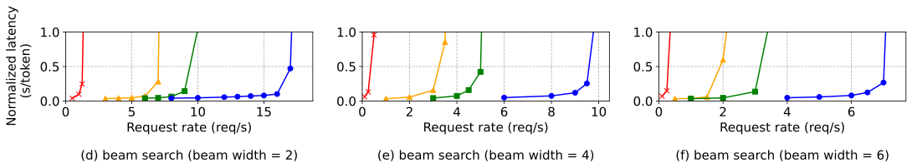
图 14：OPT-13B 在 Alpaca 数据集上的并行采样与 Beam Search 性能。
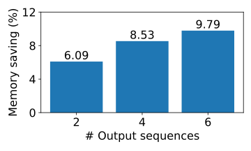
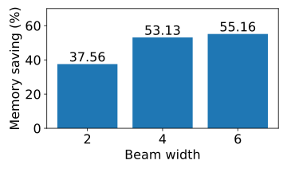
图 15：使用 OPT-13B 服务 Alpaca trace 时，通过共享 KV 块节省的平均内存比例。
#共享前缀
Workload:
LLaMA-13B
WMT16 English-to-German translation task
one-shot prefix shared: Orca (Oracle): 1.67x
more shared: Orca (Oracle): 3.58x
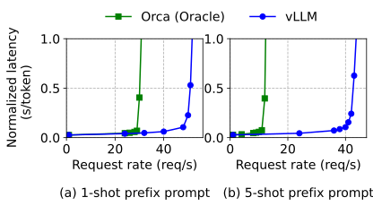
图 16：输入提示共享公共前缀的机器翻译工作负载；前缀包含 1 个 80-Token 示例或 5 个共 341-Token 的示例。
#聊天机器人
将聊天历史和最后一个用户查询连接成一个提示，让模型生成响应；使用 ShareGPT 数据集合成聊天历史和用户查询，Prompt 截断到最后 1024 个 token，并让模型最多生成 1024 个 token；不存储不同对话轮次之间的 KV 缓存，因为这样做会占用对话轮次之间其他请求的空间。
- 2x 请求率
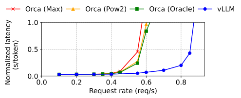
图 17：聊天机器人工作负载下的性能。
#消融实验
#Kernel Microbenchmark
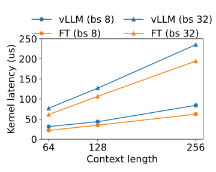
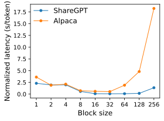
图 18：PagedAttention 内核与 KV 块大小的消融实验。
#块大小的影响
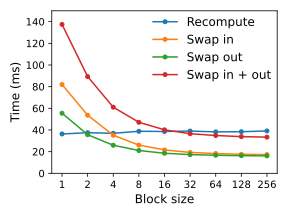
#比较重计算与交换
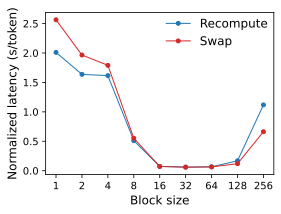
图 19：服务 OPT-13B、使用相同请求率的 ShareGPT trace 时，重计算与换出的开销及端到端性能。